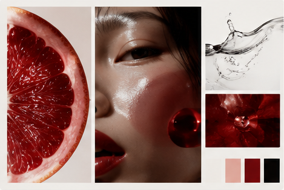
Overview
자몽 단면, 인물 클로즈업, 물의 움직임과 브랜드 컬러를 모은 이미지 보드
Familiar things, seen differently.
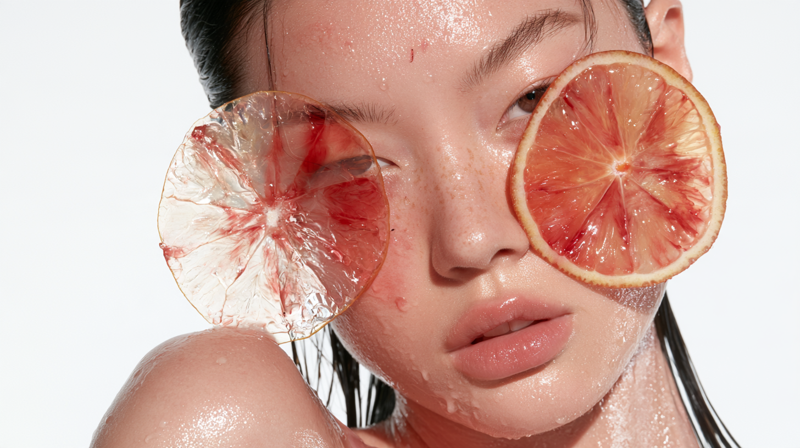
촉촉한 피부의 여성 얼굴 위로 투명한 자몽 단면 두 개가 겹쳐진 이미지
익숙한 것에서 발견한 낯선 아름다움.
매일 반복하는 스킨케어도 다른 시선으로 바라보면 새로운 경험이 될 수 있습니다.
OTHERSIDE.는 피부에 닿는 제형과 감각을 조금 낯선 방식으로 풀어내고,
익숙한 일상 속에서 미처 발견하지 못했던 아름다움을 전하고자 합니다.

자몽 단면, 인물 클로즈업, 물의 움직임과 브랜드 컬러를 모은 이미지 보드
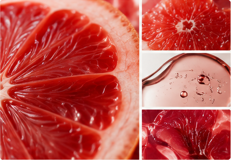
붉은 자몽의 과육과 투명한 액체의 질감을 확대해 보여주는 이미지
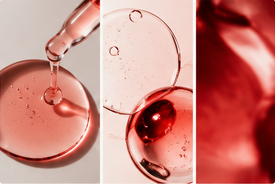
붉은 세럼 방울과 투명한 유리 오브제가 겹쳐진 이미지
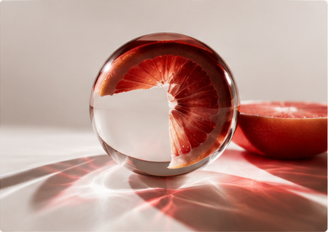
투명한 유리 구슬 안에서 자몽 단면이 굴절되어 보이는 이미지
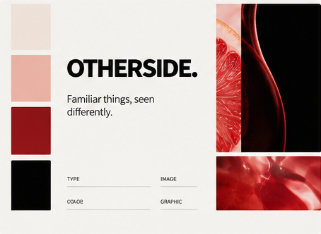
OTHERSIDE. 로고와 레드·블랙 컬러, 타이포그래피 및 이미지 원칙을 정리한 보드
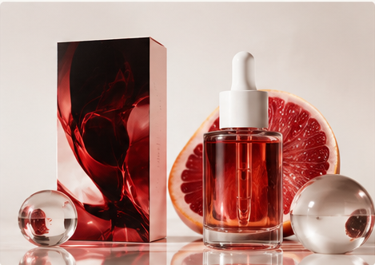
붉은 앰플병과 패키지, 자몽 단면을 함께 배치한 제품 이미지
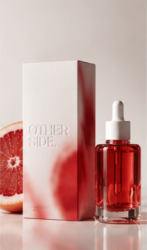
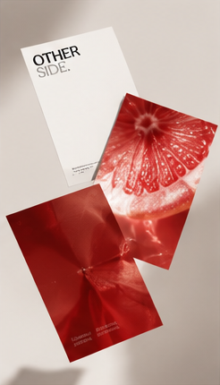
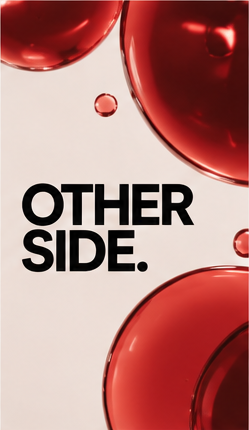
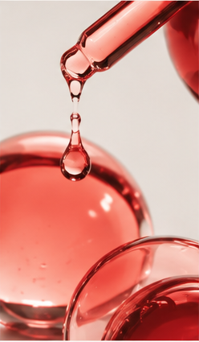
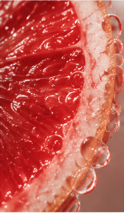
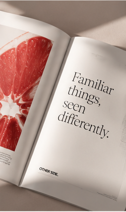